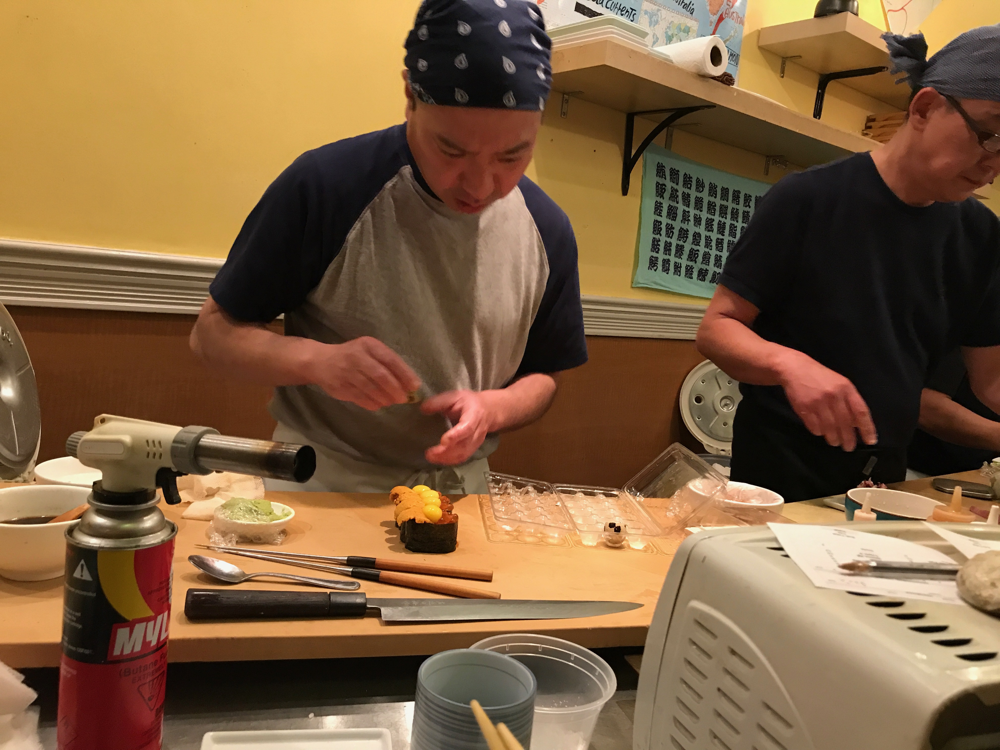
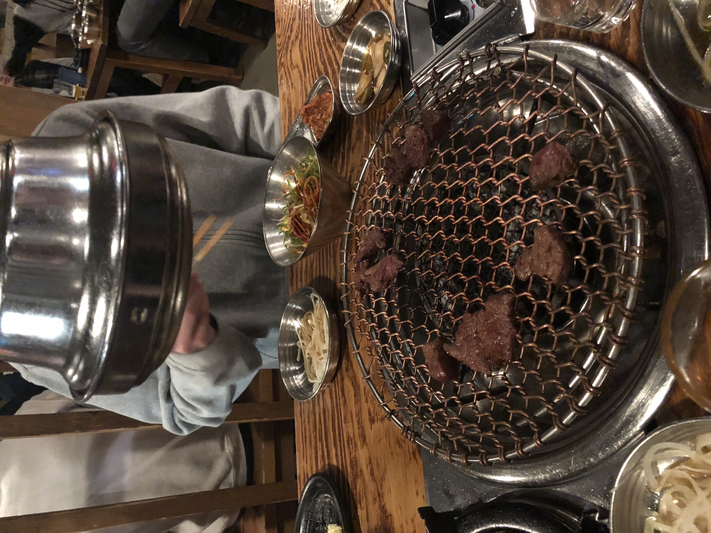

Eating
- The Dead Rabbit
- Sugarfish
- Totto Ramen
- Sumtum Der
- Mu Ramen
- Tanoshi
- Amy's Bread
- Murray's Cheese Bar
- Blue Ribbon Brasserie
- Jongro
- Tra Di Noi
- Tavern on the Green

Voted the best bar in the world for several years, this 4-story Irish bar will leave you feeling full and buzzed. If you're going for brunch on the weekend be sure to show when they open because this place gets packed. The eggs benedict or classic Irish breakfast are my go-tos. Make sure to end your meal with an irish coffee - that comes with hand whipped cream!

A LA favorite with a cult following, Sugarfish by Sushi Nozawa has made it's way to NYC and has become an instant hit offering up a fresh omakase meal for as low as $27. This restaurant doesn't take reservations so be sure to download the Nowait app to snag a table without having to put your name in at the restaurant.
This ramen spot in Hell's Kitchen has classic ramen bowls at a great price. They have lots of goodies and add ons to spice up your bowl. Be sure to remember it's cash only.

This Northeastern Thai restaurant in the East Village never disappoints. Somtum Der which had a michelin star at one point serves amazing Thai food at an average price of $15 per dish. Some favorites are the grilled coconut milk marinated beef skewers, khao pad goong, and the spicy fried chicken. Bonus, all the staff wears fedoras while they serve you.
Located in Long Island City, Mu Ramen opens up at 5pm and within minutes there's a queue outside. They have a rotating menu of ramen and don't forget to order some non-ramen favorites like the U & I and the katsu.

This omakase sushi restaurant on the upper east side is great for special occasions. You will get 10+ pieces of nigiri, sushi rolls, and soup. Plus it's BYOB so don't forget to pick up some sake and sapporo on your way in, don't worry the restaurant will chill your beverages for you.

With 6 locations you can be sure to eat fresh, tasty food from Amy's no matter where you are in the city. My personal favorites are the curry cauliflower salad, white bean sandwich, pain au chocolat, and ham and swiss on a croissant.
The dear rabbit is blah blah blah.The dear rabbit is blah blah blah.The dear rabbit is blah blah blah.The dear rabbit is blah blah blah.

A West Village classic, Blue Ribbon Brasserie serves up some amazing dishes until 4am everynight. Don't miss the friend chicken, seafood tower, or bone marrow.
Jongro is not only a meal, it's an experience. Order a meat special, some soju, beer, and become immersed. The waiter will cook your meat in front of you while you dine on all of the side dishes like the kimchi, tofu, lettuce, radishes, potato salad, and more. Jongro is hidden on the second floor above the Citibank in K-town and make to go on a weeknight as it's impossible to get a table on the weekend!

This class Italian-American restaurant on Arthur Ave in the Bronx is a restaurant you do not want to miss. Every table has a red and white checkered table cloth and you will get waited on by the Italian aunt you always wished you had. Every night they have a list of specials. My favorites are the calamari, pork chop with vinegar sauce, bolognese, and a nice bottle of red wine.
Located on the east side of Central Park at 66th street, this is a great place to bring out of town visitors or to go have a drink after relaxing in the park on a hot day. They have ample outdoor seating or if you prefer cool air conditioning, the bar inside is great too. Order a bloody mary and charcuterie platter and you'll be set.
Drinking
- Sunita Bar
- Burp Castle
- Gallow Green
- Scallywag's
- Rudy's
- The Waylon
- 169 Bar
- Erv's
This tiny bar in the lower east side has an intimate setting and allows for ample conversation. The bartender and owner is super sweet. My favorite drinks is the spicy jalapeño martini.
Burp Castle is a quirky monastery themed bar in the East Village. Don't talk to loud or the bartender will tell you to "shhhh". This is a fun stop among several bars on this street that make for a good bar hopping day or night.
Atop the McKittrick Hotel come here before your Sleep No More experience or just pop in for a drink. It's a well lit, spacious roof with themed cocktails. On colder nights the fire pit will be roaring.
An Irish bar in Hell's Kitchen, come here for a pint of guiness and a proper Irish breakfast. They often have live music and on St. Patrick's day expect a party all day long.
Don't plan on ordering a Manhattan in this bar, only come if you're going to get a beer shot and a hot dog. A free hotdog. Rudy's is budget and fun friendly. Expect to see all types of people here.
The Waylong is a Hell's Kitchen local sports bar. Every Wednesday at 8:30 they have trivia night where you can win free shots for winning and for having the best team name. If you get hungry, try out their frito pie.
Charles Hanson's 169 Soul Jazz Oyster Bar in the Lower East Side has been open for over 100 years and doesn't look like it's shutting down anytime soon. There is a leopard print pool table, crazy lights, and pirate themed decor.
The recently expanded bar in Lefferet's Garden has a seasonal cocktail menu, visiting chefs every week, and tons of fun events. If you live in the neighborhood join the coffee club to get unlimited coffee for $30 a month.
Activities
- Karaoke at Sid Gold’s
- Karaoke at Baby Grand
- The High Line
- Sleep No More
- Soho Shopping
- The Comedy Cellar
- Day in Red Hook
- Governor's Island Ferry
Piano. Karaoke. And if you don't like karaoke, don't worry, theres a separte bar in front away from the shennanigans. Sit in the fancy booths, pick a song to sing, and dance along to the piano tunes.
This tiny Soho L-shaped bar is always filled with locals belting out songs from the massive song back. If you want to get in and sing a tune right away, visit during an off time like Tuesday night before 8pm.
Formerly part of the abandoned New York Central Railroad this 1.45 mile-long elevated linear park offers sweeping views of Manhattan and the chance to explore popular destinations like the Chelsea Market.
Come to this interactive theater experience with an open mind and no idea of what to expect! Primarily based on Shakespeare's Macbeth, the show is deprived of nearly all spoken dialogue. Explore the five stories of The McKitrick Hotel alone or in a group and watch the set and actors come alive. This will be an unforgettable night.

If you're visiting NYC to shop be sure to make a pit stop in Soho. It is a consumer playground and you can shop for everything from cheap street fashion to upscale designer garb.
The Comedy Cellar is a NYC classic and the have 3+ 7 nights of the week. Make sure to get a ticket online or stand in the standby line before a show starts. The Comedy Cellar is known to have celebrity comedians drop in from time to time so you never know who you'll end up seeing!
Take the ferry from Pier 33 to Red Hook and get ready to have fun. No trip to Red Hook can start without a visit to Hometown BBQ. Make sure to show up at or before 12 if you don't want to wait in line. Next make your way over to Steve's Key Lime Pie for a slice of the debatably best key lime pie, ever. Last head over to Pioneer Works to check out their latest exhibitions.

Take the ferry from Pier 33 to Governor's island and explore the car-free island. This island was used during the American Revolutionary War by the Continental Army troops, as a post for the US Army between 1783-1966, and from 1966-1996 a US Coast Guard installation. Today you can enjoy the 150 acres of parkland equipped with playsets and hammocks. Don't forget to visit Island Oyster for a cocktail with amazing views of Manhattan.